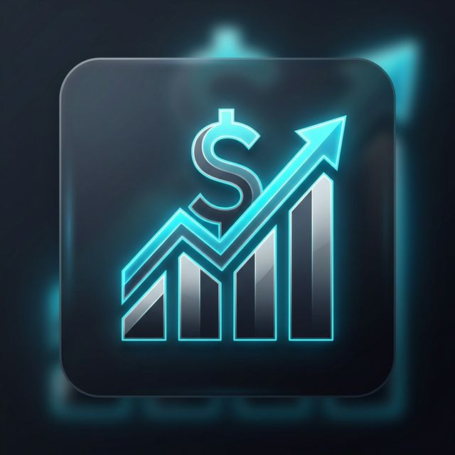

Musicknobs Labs
Herramientas, laboratorios y experimentos de vanguardia para la producción musical, mezcla y masterización. Explora nuestra colección de guías y micro-apps.
Herramientas, laboratorios y experimentos de vanguardia para la producción musical, mezcla y masterización. Explora nuestra colección de guías y micro-apps.
Guía definitiva de micrófonos de gama media y alta para voces y estudio.
Explorando el arte de la ecualización y procesamiento espectral.
Dominando la dinámica: Guías sobre compresión clásica y moderna.
El uso del tiempo en la mezcla para crear profundidad y ritmo.
Explorando efectos de Flanger, Chorus y Phaser en la producción.
El mundo de la síntesis analógica y digital para productores.
Modelado y tonos legendarios de amplificadores de guitarra.
Rutinas y herramientas para mejorar tu técnica de guitarra a diario.
Aplicación personalizada para el seguimiento de metas y gamificación.
Generador de Prompts y Ensamblador de Miniaturas de YouTube (AI + Canvas).

Gestión financiera personal y seguimiento de ingresos de la industria musical.
Generador de Portadas de Música House, con Semiótica y Ensamblaje 1:1.